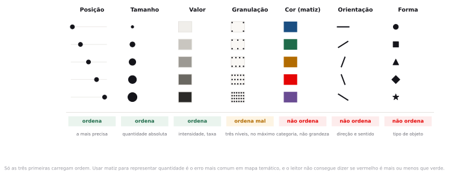
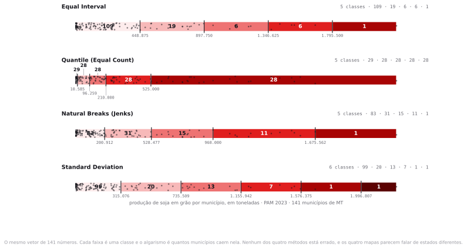
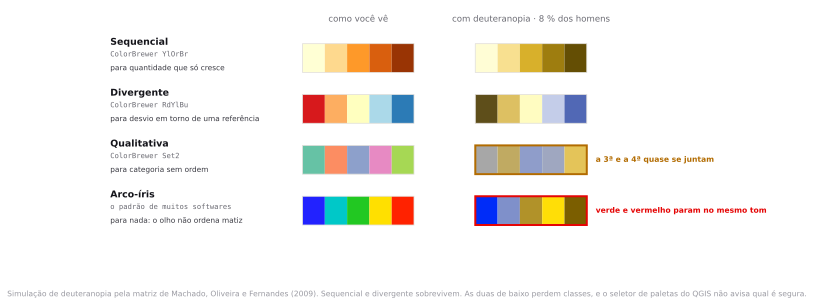
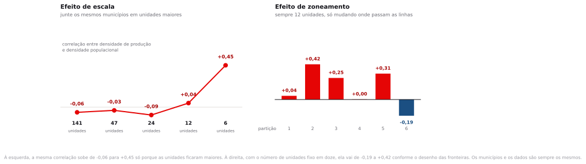

Preparação e dados
A leitura de preparação era o capítulo do How to Lie with Maps sobre mapas de dados. Se você não leu, abra agora e procure uma coisa só: quantas decisões o autor lista entre a tabela e o mapa impresso. São mais do que parece, e o software toma quase todas por conta própria quando você aceita o que já vem preenchido.
Crie InfoGeo/tema04_tematico com dados_brutos, dados_tratados e uma pasta nova, estilos, onde você vai gravar os arquivos .qml.
- municipios_mt_soja_2023.gpkg 141 municípios de Mato Grosso, polígono, EPSG:4674. Malha municipal oficial do IBGE de 2022 com área plantada, área colhida, produção, rendimento da PAM 2023 e população do Censo 2022 já unidos por CD_MUN.oficial
- sidra_pam_soja_2023.csv Produção Agrícola Municipal 2023, soja em grão, 141 municípios de MT. CSV UTF-8, separador vírgula. Chave: cd_mun.oficial
- sidra_pop_censo2022.csv População residente do Censo 2022 por município de MT, tabela 4709 do SIDRA. CSV UTF-8.oficial
CD_MUN. A população é a do Censo 2022, tabela 4709.Duas assessorias de imprensa recebem o mesmo arquivo de produção agrícola de Mato Grosso. Uma publica um mapa em que a soja aparece em quase todo o estado. A outra publica um mapa em que a cor forte cobre um município só. Nenhuma das duas alterou um único número do arquivo. Qual delas mentiu?
Cartografia temática e semiologia gráfica
Nos três temas anteriores o produto do trabalho era um número: uma área em hectares, um percentual de domicílios, uma contagem de setores. A partir daqui o produto é uma imagem, e uma imagem chega ao leitor inteira, antes de qualquer conferência. Entre a coluna de números e o mapa impresso existem cinco decisões, e todas já chegam preenchidas na janela de simbologia: o denominador, o método de corte, o número de classes, a paleta e o tipo de símbolo. Antes de tratar de cada uma, dois fundamentos: como o olho lê uma marca gráfica, e o que um mapa coroplético afirma sem dizer.
As variáveis visuais de Bertin
Em 1967, o cartógrafo francês Jacques Bertin publicou Sémiologie graphique e catalogou de forma sistemática as maneiras pelas quais uma marca no papel pode variar. São sete, e cada uma comunica um tipo diferente de informação.

Variável visual ordenada e variável visual seletiva
Uma variável é ordenada quando o leitor percebe uma sequência sem instrução: escuro é mais que claro, grande é mais que pequeno. É seletiva quando permite isolar um grupo de imediato: todos os pontos vermelhos saltam do fundo. Matiz é fortemente seletiva e não é ordenada, e é por isso que serve para categoria e não para grandeza.
Por que o mapa de calor em arco-íris, do azul ao vermelho, é tão popular se matiz não ordena?
Em parte por hábito de software: a rampa arco-íris foi padrão em ferramentas científicas por décadas e virou o que a maioria das pessoas reconhece como "mapa de calor". Em parte porque existe uma convenção aprendida, do azul-frio ao vermelho-quente, que de fato funciona para temperatura, e só para ela. Fora desse domínio o problema é duplo: o leitor não consegue ordenar as cores sem a legenda, e as transições bruscas do arco-íris, principalmente a passagem para o verde, criam fronteiras visuais em pontos onde o dado é contínuo e não tem fronteira nenhuma.
O pressuposto do mapa coroplético
Coroplético é o mapa em que cada unidade territorial recebe uma cor conforme o valor de um atributo. É o formato mais usado em redação de jornal e em relatório de prefeitura, e o que exige mais cuidado, por um motivo que está na sua própria construção: ele pinta a unidade inteira de uma cor só.
O pressuposto de homogeneidade interna
Ao preencher um polígono com uma cor única, o mapa afirma que o fenômeno se distribui de maneira uniforme dentro dele. Quase nunca é o caso: a lavoura ocupa uma fração do município, a falta de esgoto se concentra em algumas quadras do setor, o desmatamento acontece na borda da propriedade. O dado chegou agregado porque a unidade administrativa é o nível em que ele foi coletado, e o mapa devolve essa agregação ao leitor como se fosse a geografia do fenômeno. A informação sobre onde, dentro da unidade, a coisa acontece não está escondida no arquivo: ela nunca foi registrada.
Some-se a isso a distorção de tamanho. Num coroplético, o peso que cada unidade tem na retina é dado pela área que ela ocupa na tela, e a área é a única variável do mapa que você não escolheu: ela vem da malha, desenhada por razões administrativas que nada têm a ver com a sua pergunta. Municípios extensos e pouco povoados dominam a imagem; municípios pequenos e densos, onde costuma estar a população, quase desaparecem. O leitor lê área pintada como quantidade, e a área do polígono não guarda relação nenhuma com o valor mapeado.
No Brasil isso aparece em forma extrema. Em qualquer mapa temático nacional, a Amazônia ocupa quase metade da tela com municípios do tamanho de Portugal, e o Sudeste, onde vivem 42% dos brasileiros, cabe em um canto. É comum que o padrão mais visível num coroplético de variável social brasileira seja o desenho da malha municipal, e não a variável mapeada. No passo 2 você vai medir esse efeito no estado desta aula.
Concluir "o problema está concentrado no Norte" a partir de um coroplético nacional. O que está concentrado no Norte é a área dos polígonos. Antes de afirmar concentração, refaça o mapa com símbolo proporcional ou com cartograma e veja se a conclusão sobrevive.
Contagem, taxa, densidade e per capita
Uma contagem é um número absoluto: toneladas produzidas, domicílios sem esgotamento adequado. Dividir a contagem por outra grandeza produz uma medida nova, e aquilo pelo que você divide é o denominador. Uma taxa divide pela exposição, ou seja, por aquilo que teve a chance de gerar o fenômeno: quilos colhidos por hectare plantado. Uma densidade divide pela área da unidade territorial. Um valor per capita divide pela população residente. Os quatro são cálculos corretos sobre o mesmo arquivo, e cada um responde a uma pergunta diferente.
A escolha do denominador é, portanto, a escolha da pergunta, e acontece antes de qualquer decisão sobre cor. Há um ponto que só aparece quando você olha o extremo do ranking: razão com denominador pequeno é instável. Um município de dois mil habitantes que registre um único homicídio no ano aparece com cinquenta ocorrências por cem mil habitantes, bem acima da média nacional, e no ano seguinte volta a zero sem que nada tenha mudado na cidade. O mesmo acontece com rendimento agrícola calculado sobre poucos hectares. Por isso todo mapa de taxa precisa de um limiar mínimo de exposição, declarado na legenda junto com quantas unidades ficaram de fora por causa dele.

| Forma | Responde | Quando engana |
|---|---|---|
| Contagem o valor bruto | Onde está o volume, onde vai o caminhão, onde entra o imposto | Unidades grandes ganham por serem grandes. Em coroplético, vira um mapa da malha territorial. |
| Taxa dividida pela exposição | Quão eficiente é a atividade naquele lugar | Quem tem pouca exposição ocupa o topo com facilidade. Sem limiar mínimo, o ranking é dominado por casos que não representam nada do total. |
| Densidade dividida pela área | Quão intensamente o território está sendo usado | Depende do recorte territorial, que é uma convenção administrativa. É por aqui que o MAUP entra num mapa que parecia inocente. |
| Per capita dividida pela população | Quanto da atividade existe por pessoa | Denominador pequeno explode a razão: uma unidade com poucos milhares de habitantes lidera qualquer ranking per capita de atividade econômica. |
Qual denominador você usaria para um mapa que vai embasar a decisão sobre onde construir um armazém de grãos?
Contagem, e sem coroplético. O armazém precisa de volume físico chegando, não de eficiência por hectare. Mas volume é uma grandeza absoluta e coroplético é ruim para grandeza absoluta, então o instrumento correto é símbolo proporcional sobre a sede, com a área do círculo proporcional às toneladas.
Quatro métodos de classificação
Para transformar uma coluna de números contínuos em cinco cores, é preciso decidir onde cortar. Todo SIG oferece essa decisão em um menu suspenso, sem nenhuma explicação ao lado, e com um item já pré-selecionado. Os quatro métodos abaixo estão em qualquer um deles, com nomes praticamente iguais.

| Método | Como corta | O que o mapa passa a dizer |
|---|---|---|
| Intervalos iguais | Divide a amplitude em faixas de mesma largura | Com dado assimétrico, quase tudo cai na primeira classe. O mapa vira "só dois lugares importam". |
| Quantis | Mesmo número de unidades em cada classe | O mapa fica visualmente equilibrado e some com a assimetria. Vira "está em toda parte". |
| Quebras naturais (Jenks) | Minimiza a variância dentro das classes | Respeita agrupamentos que existem no dado. É o padrão razoável, e é instável: muda quando você acrescenta uma feição. |
| Desvio padrão | Faixas medidas em desvios em torno da média | Só faz sentido com distribuição aproximadamente simétrica. Com dado assimétrico esvazia as classes de cima, e o número de faixas que sai pode não ser o que você pediu. |
Existe um critério para escolher entre eles, e ele não é estatístico: é a pergunta que o mapa vai responder. Quando o mapa vai ser comparado com outro, de outro ano ou de outro estado, as quebras precisam ser as mesmas nos dois, o que exige um método fixo e declarado, na prática intervalos iguais ou faixas definidas à mão. Quebras naturais servem ao caso oposto, do mapa único em que a pergunta é onde estão os agrupamentos que já existem no dado. E quando a pergunta é de posição relativa, do tipo "quem está no quinto superior do estado", quantis respondem exatamente isso, ao preço de apagar a magnitude.
Vale insistir nesse preço, porque ele é a origem da confusão mais cara desta aula: quantil produz uma escala ordinal, intervalo igual produz uma escala cardinal, e as duas legendas saem com a mesma aparência, uma sequência de faixas numéricas em ordem crescente. Um leitor que interprete a classe alta de um mapa de quantis como "produz muito" está lendo uma posição de ranking como se fosse uma quantidade. Sem a informação do método, ele não tem como saber que fez isso.
Se os quatro métodos são legítimos e produzem mapas incompatíveis, existe um mapa certo?
Não, e a exigência recai sobre a declaração: o método e o número de classes precisam aparecer na legenda, a distribuição precisa estar disponível e a escolha precisa responder à pergunta em questão. Sem essa informação, o leitor não tem como avaliar o que o mapa afirma, do mesmo jeito que não avaliaria uma citação sem fonte.
Quantas classes
O olho humano distingue com segurança de cinco a sete níveis de intensidade em uma sequência de cores impressa. O limite não é do mapa, é da percepção: para o leitor separar duas classes vizinhas sem colocá-las lado a lado, a diferença de luminosidade entre elas precisa ser grande, e com mais de sete degraus na mesma rampa ela deixa de ser. Abaixo de quatro classes acontece o problema oposto, e informação que existe no dado é jogada fora antes de chegar à tela.
O número de classes interage com o método, e o efeito é mais forte com quantis, porque neles a contagem por classe é fixada de saída: com três classes, um terço das unidades cai na faixa mais alta por construção; com nove, esse terço se fragmenta e a impressão de que o fenômeno "está em toda parte" enfraquece. O dado é o mesmo nos dois casos. Você vai medir essa diferença no passo 6.
Cinco classes, método declarado na legenda, e a distribuição do dado disponível para quem quiser conferir. Se você precisa de mais de sete classes para a mensagem funcionar, reveja antes o instrumento: costuma ser sinal de que a variável pede símbolo proporcional, e não coroplético.
Paleta e acessibilidade
A paleta vem depois do método na janela e antes dele na leitura: o leitor vê a cor primeiro. Existem três famílias, e escolher a família errada compromete a leitura mesmo que as quebras estejam corretas.

| Família | Use quando | Exemplo no ColorBrewer |
|---|---|---|
| Sequencial | A variável só cresce: produção, densidade, percentual | YlOrBr, Blues, Greens |
| Divergente | Existe um ponto de referência com significado: a média, o zero, a meta | RdYlBu, BrBG, PiYG |
| Qualitativa | As categorias não têm ordem: tipo de cultura, classe de uso | Set2, Dark2, Paired |
Usar paleta divergente para uma variável que só cresce. O leitor procura o ponto de virada, encontra o meio da escala e conclui que ali existe uma fronteira qualitativa. Não existe: é o meio numérico do intervalo, escolhido por você.
Símbolo proporcional e cartograma
Se a variável é uma contagem, e você não quer transformá-la em taxa, o coroplético é o instrumento errado. Há duas alternativas, com preços diferentes.
O símbolo proporcional põe um círculo sobre cada unidade, com área proporcional ao valor, e desliga o tamanho do polígono da leitura. Cria dois problemas próprios: círculos grandes cobrem os vizinhos em regiões densas, e o olho subestima diferença de área de círculo de forma sistemática, o que achata a impressão de contraste. Cuidado com a armadilha aritmética: se o software dimensiona o raio pelo valor, uma unidade com o dobro da produção ganha um círculo com quatro vezes a área, e o mapa exagera a diferença por um fator de dois. O que precisa ser proporcional ao valor é a área do círculo.
O cartograma deforma os polígonos até que a área de cada um fique proporcional ao valor. Resolve por completo o problema do tamanho e destrói o reconhecimento geográfico: fica bom para uma audiência que conhece o território de cor, e ruim para todas as outras. Não vem no QGIS de fábrica; depende de plugin.
| Instrumento | Bom para | Preço |
|---|---|---|
| Coroplético | Taxa, densidade, percentual | Pinta a unidade inteira e favorece o polígono grande |
| Símbolo proporcional | Contagem absoluta | Sobreposição em áreas densas e subestimação da área do círculo |
| Cartograma | Mostrar que a área engana | O leitor perde a referência do mapa |
| Ponto de contagem | Sugerir distribuição interna | Os pontos são sorteados dentro do polígono e podem ser lidos como localização real |
MAUP: escala e zoneamento
No tema 3 o problema apareceu como observação: o percentual de domicílios sem esgotamento adequado ia de 0% a 100% de um setor censitário para outro em São Paulo e virava um número só, 4,56%, quando agregado por município. Agora ele ganha nome e mecanismo, e se separa em duas partes que costumam ser confundidas uma com a outra.
Efeito de escala e efeito de zoneamento
O efeito de escala é a mudança do resultado quando as unidades ficam maiores ou menores, mantido o critério de agregação. O efeito de zoneamento é a mudança do resultado quando o número de unidades é o mesmo e apenas o traçado das fronteiras muda. Os dois são consequência de as unidades territoriais serem convenções administrativas, e não recortes do fenômeno.

Uma consultoria apresenta uma correlação de 0,45 entre produção agrícola e população em Mato Grosso. O que você pergunta antes de qualquer outra coisa?
Em que unidade territorial a correlação foi calculada. Com os 141 municípios, a mesma conta devolve −0,06. Agregar unidades tende a aumentar a correlação, porque a agregação suaviza a variância interna de cada grupo e deixa só a variação entre grupos, mas não é uma escada regular: com 24 unidades a correlação cai para −0,09 antes de subir. Uma correlação publicada sem a unidade territorial em que foi calculada não pode ser verificada nem comparada com nenhuma outra.
Diante de um mapa temático, a prova pode pedir a identificação da variável visual usada e o julgamento sobre se ela é adequada ao dado; a crítica da escolha de denominador; o diagnóstico do método de classificação a partir da legenda e da distribuição; e a separação, em uma conclusão dada, do que é fenômeno e do que é efeito de escala ou de zoneamento.
Quatro mapas do mesmo dado, no QGIS
Todos os valores abaixo saem do arquivo que você baixou. Se o seu QGIS mostrar outra coisa, confira antes de tudo se você pediu cinco classes e se o campo é o certo.
Carregar e conferir os totais
- Projeto novo, salvo como
InfoGeo/tema04_tematico/projeto.qgz. - Arraste
municipios_mt_soja_2023.gpkg. - Em Project ▸ Properties ▸ General, defina o elipsoide como GRS 1980 e a unidade de área como Quilômetros quadrados.
- Abra o painel de estatísticas em View ▸ Panels ▸ Statistics. Ele tem dois seletores no topo: escolha a camada de municípios no primeiro e o campo no segundo. O painel recalcula a cada troca de campo. Passe por
AREA_KM2,pop_residente,area_colhida_haequantidade_t.
141 feições. AREA_KM2 soma 903.208, pop_residente soma 3.658.649, area_colhida_ha soma 11.981.285 e quantidade_t soma 44.425.783. O máximo de quantidade_t é 2.244.375, em Sorriso, e a média é 315.076. Treze municípios têm quantidade_t igual a zero, entre eles Colniza, o maior do estado em área.
Ainda no painel, com quantidade_t selecionado, compare a média de 315.076 com a mediana de 151.200. A média é 2,08 vezes a mediana, e isso é a assinatura de uma distribuição com cauda longa à direita: poucos municípios muito acima, muitos amontoados perto do zero. Os dez maiores produtores respondem por 33,5% da safra estadual, e o desvio padrão, 420.433, é maior que a própria média. É exatamente o caso em que a escolha do método de classificação decide o mapa. Faça essa comparação sempre, antes de abrir a aba de simbologia.
O primeiro coroplético, em intervalos iguais
- Botão direito na camada de municípios, Properties, aba Symbology.
- No seletor do topo, troque Single Symbol por Graduated.
- Preencha conforme abaixo e clique Classify, depois Apply.
- Value
- quantidade_t
- Symbol
- preenchimento simples, contorno branco 0,15 mm
- Color ramp
- YlOrBr (ColorBrewer)
- Mode
- Equal Interval
- Classes
- 5
- Precision
- 0
A legenda mostra as quebras em 448.875 · 897.750 · 1.346.625 · 1.795.500 · 2.244.375. Para ver quantos municípios caem em cada faixa, clique com o botão direito na camada, no painel de camadas, e marque Show Feature Count: os números aparecem entre colchetes ao lado de cada classe e são 109 · 19 · 6 · 6 · 1. O mapa está quase todo na cor mais clara, e a classe mais escura tem um município só.
Com o mapa aberto, ordene a tabela de atributos por AREA_KM2 decrescente e confira estas contas. Os dez municípios mais extensos ocupam 25,2% do território de Mato Grosso e respondem por 7,9% da produção de soja. Os trinta menores ocupam 3,5% do território, produzem 2,0% e abrigam 13,5% da população. Colniza, o maior município do estado com 27.960 km², sozinho ocupa 3% da tela e não colheu um hectare de soja em 2023. Aripuanã, o terceiro maior com 24.678 km², colheu 10.731 hectares, quatro décimos de um por cento do próprio território, e o mapa pinta o território inteiro. Esse é o pressuposto de homogeneidade interna acontecendo na sua tela.
Quatro classificações e um arquivo .qml para cada
Agora você vai produzir as quatro versões do mesmo mapa sem alterar um único valor da tabela.
- Com o estilo de intervalos iguais aplicado, vá em Properties, aba Symbology, botão Style no rodapé da janela, Save Style, e grave
estilos/mt_soja_intervalos_iguais.qml. - Duplique a camada três vezes: botão direito, Duplicate Layer. Renomeie as cópias para quantis, jenks e desvio.
- Em cada cópia, mude apenas o campo Mode na aba Symbology, clique Classify e depois Apply. Salve o
.qmlcorrespondente emestilos/.
| Mode no QGIS | Quebras superiores | Contagem por classe |
|---|---|---|
| Equal Interval | 448.875 · 897.750 · 1.346.625 · 1.795.500 · 2.244.375 | 109 · 19 · 6 · 6 · 1 |
| Quantile (Equal Count) | 10.585 · 96.259 · 210.000 · 525.000 · 2.244.375 | 29 · 28 · 28 · 28 · 28 |
| Natural Breaks (Jenks) | 200.912 · 528.477 · 960.000 · 1.675.562 · 2.244.375 | 83 · 31 · 15 · 11 · 1 |
| Standard Deviation | 315.076 · 735.509 · 1.155.942 · 1.576.375 · 1.996.807 · 2.244.375 | 99 · 20 · 13 · 7 · 1 · 1 |
Peça cinco classes pelo método do desvio padrão e você recebe seis. O QGIS aplica o algoritmo pretty() do R sobre o escore padronizado, e o número de intervalos redondos que cabem na amplitude dos dados nem sempre é o que você pediu. Neste arquivo a primeira quebra cai exatamente sobre a média, em 315.076 toneladas, e as seguintes ficam a um desvio padrão de distância uma da outra. Não é defeito, e é mais um motivo para o número de classes ir escrito na legenda: aqui ele nem coincide com o que foi pedido na janela.
Marque Show Feature Count em cada camada e compare com a coluna da direita. Se a sua contagem de Jenks vier diferente, confirme que Classes está em 5 e que nenhuma feição foi filtrada. A classe mais alta reúne 5,1% da produção estadual pelos intervalos iguais, 65,2% pelos quantis e outra vez 5,1% por Jenks. Repare no que está por trás desses 5,1%: em três dos quatro métodos a classe mais escura contém um único município, Sorriso, de modo que a cor mais forte do mapa descreve um município e mais nada.
O .qml guarda a simbologia completa em XML, separada dos dados: campo, método, quebras, cores, contornos e rótulos. É o que permite outra pessoa reabrir o seu mapa exatamente como você o deixou, e é onde alguém vai conferir, meses depois, qual método você usou de fato. Guarde o .qml junto com o resultado, sempre. O assunto volta no tema 10, quando a reprodutibilidade entra nos critérios de correção.
Os quatro mapas lado a lado, no layout de impressão
Uma comparação feita de memória, alternando entre camadas na tela, não convence ninguém e nem sempre convence você. Colocar as quatro versões na mesma folha resolve isso: o leitor vê as diferenças de uma vez, com o mesmo enquadramento e a mesma escala nas quatro.
- Antes de abrir o layout, transforme cada versão em um tema de mapa. No painel Layers, deixe visível só a camada de intervalos iguais, clique no botão Manage Map Themes, o primeiro da barra do painel, e escolha Add Theme…. Dê o nome t_iguais.
- Repita para as outras três, com os nomes t_quantis, t_jenks e t_desvio, deixando em cada caso apenas a camada correspondente visível.
- Vá em Project ▸ New Print Layout e dê o nome quatro classificacoes.
- Em Layout ▸ Page Properties, escolha A4 e orientação Landscape.
- Use Add Item ▸ Add Map e desenhe o primeiro retângulo no quadrante superior esquerdo, com cerca de 13 cm de largura. Com o item selecionado, no painel Item Properties, marque Follow map theme e escolha t_iguais.
- Ainda em Item Properties, use Set Map Extent to Match Main Canvas Extent para enquadrar o estado inteiro e depois anote o número que aparece no campo Scale. É esse valor que você vai repetir nos outros três.
- Repita os dois passos anteriores nos outros três quadrantes, cada um com o seu tema, e digite à mão em Scale o mesmo valor anotado. Marque Lock layers nos quatro, para que ligar ou desligar camadas no projeto não mexa mais no layout.
- Insira quatro rótulos com Add Item ▸ Add Label, um acima de cada mapa, com o nome do método e a contagem por classe.
- Acrescente uma barra de escala e uma seta de norte, que valem para os quatro por estarem todos na mesma escala, e um rótulo de fonte no rodapé: IBGE, malha municipal 2022 e PAM 2023.
- Exporte com Layout ▸ Export as Image, em 300 dpi, para
quatro_classificacoes.png.
Os quatro campos Scale mostram o mesmo número, e o contorno de Mato Grosso ocupa a mesma posição nos quatro quadros. Se um dos mapas estiver deslocado, é sinal de que você moveu o canvas depois de definir a extensão: volte ao item, redefina a extensão e digite a escala de novo.
Deixar cada mapa com a escala que saiu do desenho do retângulo. Basta um dos quatro estar em escala diferente para a comparação virar outra coisa: o leitor atribui à classificação uma diferença de tamanho que veio do enquadramento. Comparação lado a lado com escalas distintas é um dos jeitos mais antigos de enganar com mapa, e o mais difícil de perceber, porque nada na peça denuncia.
Este é o primeiro layout do curso, e o roteiro usa dele só o necessário para a comparação. O módulo Preparar o mapa para entrega cobre o layout de impressão por inteiro, incluindo legenda filtrada, barra de escala, mapa de detalhe, atlas e template. O padrão de entrega que fecha aquele módulo é o mesmo contra o qual a APS 1 será corrigida.
A mesma variável em contagem e em rendimento
- Duplique de novo a camada de municípios e chame a cópia de rendimento.
- Antes de estilizar, aplique o limiar de exposição. Em Properties ▸ Source ▸ Query Builder, escreva o filtro abaixo e clique OK. A camada passa a se comportar como se tivesse 108 feições.
"area_colhida_ha" > 5000 -- deixa 108 dos 141 municípios
- Em Symbology, troque o campo Value de
quantidade_tpararendimento_kg_ha, com Mode em Quantile e 5 classes. - Coloque as duas camadas lado a lado no layout e compare o norte do estado.
No mapa de contagem, o topo é Sorriso, com 2.244.375 toneladas. No de rendimento, entre os 108 municípios que restaram, o topo é Conquista D'Oeste, com 4.200 kg/ha, e Sorriso, com 3.750 kg/ha, aparece em 37º. Trocar o denominador mudou a ordem do estado inteiro, e nenhum valor da tabela foi tocado.
Mapear rendimento sem o limiar de exposição. Sem o filtro, entram na conta os 13 municípios que não colheram um hectare de soja em 2023: eles têm rendimento_kg_ha igual a zero e o mapa os pinta como se fossem lavouras improdutivas, quando na verdade não há lavoura ali. Entram também municípios com poucos milhares de hectares, que representam frações de um por cento da safra. Conquista D'Oeste, aliás, lidera nos dois casos, mas com 10.636 hectares colhidos, 0,09% da área colhida do estado: mesmo com filtro, o primeiro colocado de um mapa de taxa merece um olhar na exposição antes de virar manchete. Qualquer que seja o limiar escolhido, ele vai escrito na legenda, junto com quantos municípios ficaram de fora.
- Volte à camada de contagem, entre em modo de edição com
Ctrl+Ee abra o Field Calculator comCtrl+I. Marque Create a new field, nomeT_POR_KM2, tipo Decimal number (real), comprimento 10 e precisão 2, com a expressão abaixo.
"quantidade_t" / "AREA_KM2" -- densidade: toneladas por km² de município
- Crie do mesmo modo
T_POR_HAB, também real com precisão 2, usando"quantidade_t" / "pop_residente". Salve as edições e desligue o modo de edição. - Aplique simbologia graduada em cada um dos dois campos novos e ordene a tabela por eles para ler o topo.
O máximo de T_POR_KM2 é 252,05, em Ipiranga do Norte, que é o 15º em toneladas e tem 3.422 km². Sorriso, o primeiro em volume, fica em terceiro nesta lista, com 241,50. O máximo de T_POR_HAB é 197,12, em Santa Rita do Trivelato, que tem 3.276 moradores, e Sorriso cai para o 56º. Quatro mapas, quatro primeiros colocados, todos calculados corretamente a partir do mesmo arquivo.
Mexer só no número de classes
- Volte à camada de quantis sobre
quantidade_t. - Troque Classes para 3, clique Classify, Apply, e olhe o mapa.
- Troque para 9, Classify, Apply, e olhe de novo.
- Volte para 5.
Com quantis e 3 classes, 47 municípios ficam na faixa mais alta, um terço do estado. Com 9 classes, a faixa mais alta cai para 16. O dado não mudou: a fração do estado que a legenda chama de "alta produção" foi de 33,3% para 11,3%, e a única coisa alterada foi o valor da caixa Classes. Repare no limite inferior da faixa mais alta: com três classes ele está em 267.772 toneladas e com nove salta para 816.000. Um município que tenha produzido 500 mil toneladas aparece na categoria mais alta do primeiro mapa e na penúltima do segundo, sem que nada tenha acontecido com ele.
Paleta e teste de daltonismo
- Na camada de Jenks, abra o seletor Color ramp e escolha Create New Color Ramp ▸ Catalog: ColorBrewer.
- Selecione
YlOrBrcom 5 classes. Aplique. - Troque para a divergente
RdYlBue olhe o resultado. A variável só cresce e não tem ponto de referência, então a paleta cria uma fronteira falsa no meio do intervalo. - Volte para
YlOrBr. - Teste a acessibilidade em View ▸ Preview Mode ▸ Simulate color blindness (Deuteranopia).
- Compare o mapa com
YlOrBre com uma paleta arco-íris qualquer sob o modo de simulação. Depois volte para Normal.
Sob a simulação, YlOrBr continua legível: as cinco classes permanecem ordenadas do claro ao escuro, porque a paleta varia luminosidade e não só matiz. Com arco-íris, as classes do meio e do topo se aproximam e a ordem se perde.
Símbolo proporcional para a contagem
- Gere um ponto por município a partir da própria malha. Abra a caixa de ferramentas com
Ctrl+Alt+T, procureCentroids, de identificadornative:centroids, e rode sobre a camada de municípios com Create centroid for each part desmarcado, gravando emdados_tratados/centroides_mt.gpkg. Coloque a camada no topo da pilha. Atenção ao que esse ponto é: o centro geométrico do polígono, e não a sede municipal, que costuma ficar longe dele. Para símbolo proporcional o centro geométrico serve, porque o círculo representa o município inteiro; num mapa de acesso a serviço, não serviria, e a diferença precisa aparecer na legenda. - Em Symbology, escolha Single Symbol, marcador simples, círculo, preenchimento com 60% de opacidade e contorno escuro fino.
- Clique no botão de dado definido ao lado de Size e escolha Assistant.
- Preencha conforme abaixo.
- Source
- quantidade_t
- Values from
- 0 a 2244375 (botão Fetch value range)
- Size from
- 0,4 mm a 12 mm
- Scale method
- Surface
- Deixe a camada de municípios abaixo, com preenchimento cinza claro e contorno branco fino, servindo apenas de referência geográfica.
- Abra um layout novo, chame de contagem, e monte a comparação final em dois mapas na mesma escala: o coroplético de
quantidade_tem intervalos iguais de um lado, o símbolo proporcional do outro. Exporte em 300 dpi.
No coroplético, o noroeste do estado, onde ficam Colniza, Juína e Aripuanã, ocupa boa parte da tela. No mapa de símbolos, o maior círculo está sobre Sorriso e os círculos grandes se concentram numa faixa central que vai de Sapezal a Querência, enquanto os três municípios do noroeste aparecem sem círculo ou com um círculo mínimo. É a mesma coluna de dados nos dois mapas.
É a armadilha aritmética da teoria, agora em forma de campo preenchido. Com Scale method em Radius, o QGIS dimensiona o raio pelo valor, e um município com o dobro da produção ganha um círculo com quatro vezes a área: o mapa exagera a diferença por um fator de dois. Surface dimensiona a área, que é o que o olho lê. Mesmo assim, o leitor subestima diferenças de área de círculo, então vale rotular os cinco maiores com o valor em toneladas.
Quatro primeiros colocados: Sorriso, Conquista D'Oeste, Ipiranga do Norte e Santa Rita do Trivelato
De um único arquivo, sem que nenhum valor fosse alterado, saíram um mapa com 109 municípios na classe mais baixa e outro com 29, mais quatro rankings com quatro primeiros colocados distintos, um deles um município de 3.276 habitantes. Cada uma dessas peças é reproduzível pelo .qml que você gravou e defensável diante de uma pergunta específica, e cada uma sustenta uma manchete que as outras desmentem. A escolha de qual publicar é editorial, e vai declarada na legenda: campo, denominador, método, número de classes e, quando houver, o limiar de exposição.
Exercício
Você é o editor de dados de um jornal e recebeu os quatro mapas que acabou de produzir.
- Escolha duas das quatro classificações.
- Para cada uma, escreva a manchete de até doze palavras que aquele mapa sustentaria. A manchete precisa ser verdadeira em relação ao mapa, não em relação à sua opinião.
- Diga qual das duas você defenderia publicamente, e por quê.
- Escreva a crítica que um jornalista competente do jornal concorrente faria à sua escolha, em uma frase, citando um número.
Exemplo do formato, com um par que você não pode usar de novo: um mapa de intervalos iguais sustenta "Soja de Mato Grosso se concentra em um município só", porque 109 dos 141 caem na classe mais baixa e a mais alta tem apenas Sorriso. A crítica é que a classe mais baixa vai de zero a 448.875 toneladas e mistura Colniza, que não colheu um hectare, com Alto Taquari, que produziu 253.260 toneladas.
Fechamento
Nenhuma das duas mentiu. Uma usou quantis e a outra usou intervalos iguais, e as duas omitiram esse detalhe da legenda.
Com quantis, 28 dos 141 municípios caem na classe mais alta e ela reúne 65,2% da produção do estado. Com intervalos iguais, a classe mais alta tem um município, Sorriso, e 5,1% da produção. Os dois mapas saem do mesmo arquivo, em dois cliques no mesmo menu, e o leitor não tem como distinguir sem a legenda completa.
Mentira em cartografia raramente é dado falso. É escolha não declarada. A partir de hoje, todo mapa seu carrega na legenda o campo, o método, o número de classes e o denominador, do mesmo jeito que carrega o CRS desde o tema 2.
O que discutir com a turma
Se toda escolha de classificação é retórica, qualquer mapa vale o mesmo?
Não. Diante de uma pergunta específica há escolhas claramente piores: paleta divergente numa variável que só cresce inventa um ponto de virada onde o dado não tem nenhum, e coroplético de contagem devolve, na prática, um mapa do tamanho dos municípios. O que não existe é escolha neutra. Aceitar o que já vinha preenchido na janela também é escolher, com o agravante de que quem aceita não fica sabendo o que escolheu, e por isso não tem como justificar depois.
O QGIS deveria mostrar o histograma da variável antes de deixar você classificar?
Ele mostra, na aba Histogram da mesma janela, e quase ninguém abre. Vale discutir se o problema é de interface ou de formação: a ferramenta oferece a informação sem torná-la parte do fluxo, e o padrão vem pré-selecionado e pronto para aplicar.
Um órgão público que divulga mapa temático deveria ser obrigado a publicar a tabela por trás dele?
APS 1 · onde começar a reforma sanitária das escolas
A primeira atividade prática supervisionada é lançada hoje e vale 10% da nota final. Cada aluno recebe um estado, sorteado pelo mês de nascimento, e cruza o Censo Escolar 2025 do INEP com a malha municipal do IBGE para entregar dez municípios prioritários. O trabalho de QGIS é o dos temas 1 a 4; a parte que pesa na correção é escrever por qual denominador a prioridade foi medida e por que essa escolha, e não a outra, sustenta a lista. A entrega são três arquivos: um documento de até seis páginas, o projeto .qgz com caminhos relativos e o coroplético em PDF vetorial no padrão de entrega. O enunciado completo, com o roteiro em onze passos e a tabela de pesos da correção, está em APS 1 · Onde começar a reforma sanitária das escolas.
- Você comparou métodos de classificação sem nenhum critério objetivo para escolher entre eles. Existem medidas de qualidade de classificação, como a razão de ajuste de variância, que dizem qual corte separa melhor os agrupamentos do dado. Nenhuma delas responde qual corte serve à pergunta que o mapa vai responder, e essa é a decisão que sobrou para você.
- O cartograma foi discutido e não foi produzido. Depende de plugin e de tempo que esta aula não tem.
- Nada aqui trata de rotulagem, hierarquia tipográfica ou composição da página. Os elementos de layout apareceram pela primeira vez no passo 4, no mínimo necessário para a comparação, e voltam com rigor no tema 10.
- A PAM é uma estimativa municipal, produzida por levantamento junto a informantes locais, e não uma medição de lavoura. Valores redondos de rendimento se repetem porque o informante arredonda: 3.600 kg/ha aparece em 18 municípios e 3.750 em 12. Isso não invalida o mapa, e invalida comparar dois municípios vizinhos por uma diferença de dezenas de quilos por hectare.
- O MAUP foi demonstrado e não foi corrigido, porque não há correção conhecida. O que se pode fazer é declarar a unidade e, quando possível, mostrar o resultado em mais de uma escala. O tema 6 volta ao assunto com a matriz de vizinhança.
- Os 13 municípios sem lavoura de soja atravessaram todos os mapas desta aula com o valor zero, e zero em produção e zero em rendimento são coisas diferentes: o primeiro é uma medida, o segundo é a ausência do que seria medido. Nenhum passo aqui separou essas unidades numa classe própria, que é o tratamento correto quando a legenda vai a público.